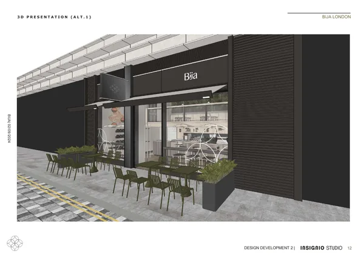
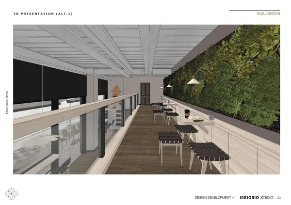
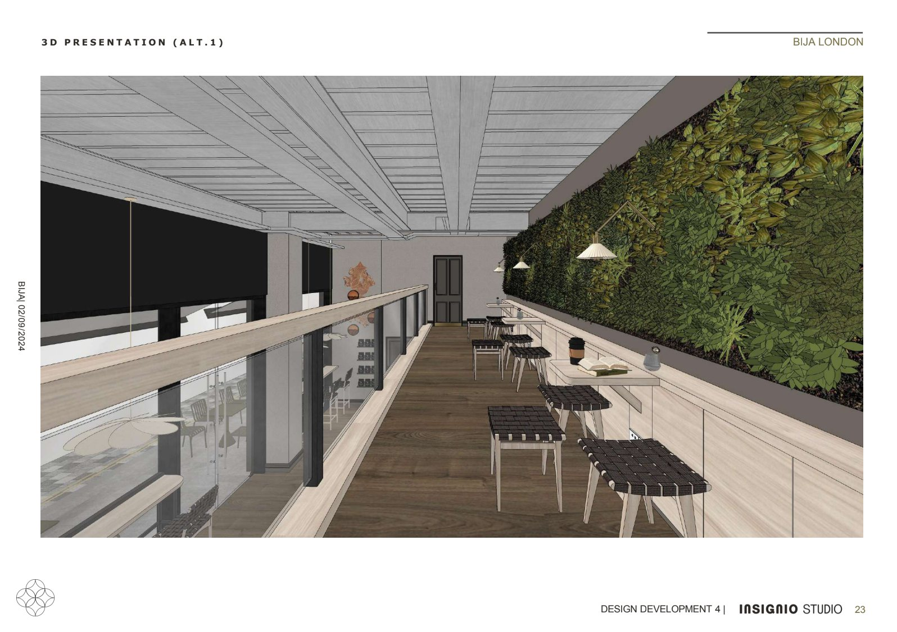
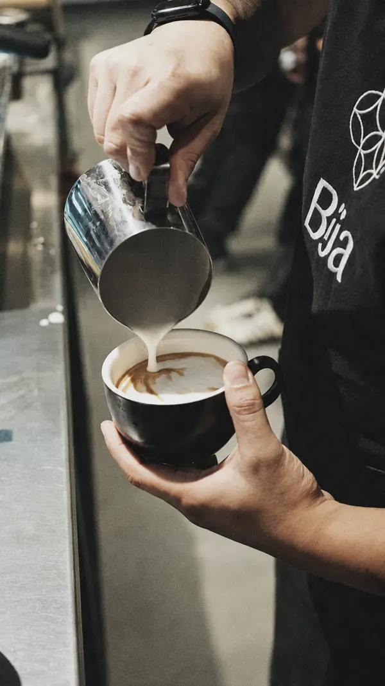
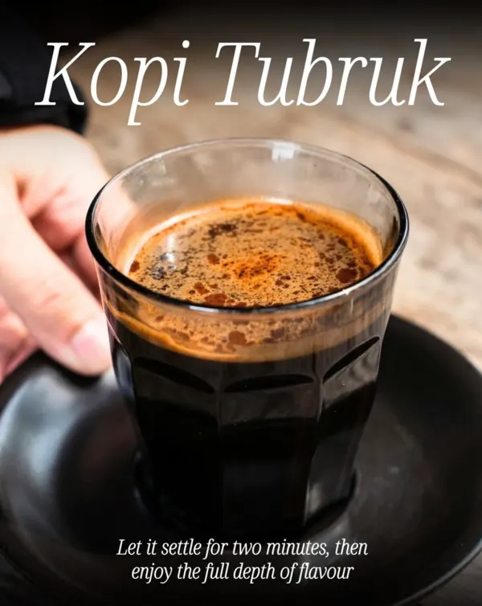
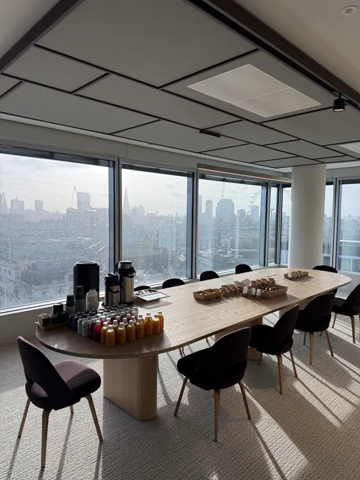

A little corner of Indonesia in London.
A small escape in the middle of the city, shaped by Indonesian coffee and the pleasure of time spent together: the place you come back to for an honest taste of the islands and a welcome that feels like your own.


01Step in from St James’s Market.
02The counter: pale wood and amber light.
03Upstairs, beside the living wall.
Slow down. Stay a while.
We choose distinctive beans, prepare every drink with thought, and leave room for people to linger, talk and feel at home.

Inside Bija.
A black-and-white front opens onto warm light and pale wood. Upstairs, a living wall of succulents brings green to the mezzanine and a quieter seat above St James’s Market.
The room reflects how we like to share coffee: unhurried, comfortable and open to conversation.

Authentic taste, careful preparation, a friendly welcome.
Wherever we pour it, at our counter, in your kitchen or at your gathering, the promise stays the same.
Coffee beyond the counter.
We want more people to discover Indonesia’s coffee heritage and the flavours that set each region apart. Brew our beans at home, read the stories behind them, or ask our catering team to pour at your next gathering.

Care in every part of a visit.
Authenticity, quality and community guide what we do. We respect where our coffee comes from, work with partners who care for people and nature as we do, and support work that protects Indonesia’s wildlife and cuts food waste. Above all, we hope to be a familiar home for Indonesian coffee in London: somewhere to enjoy a good cup, learn a little about its roots and feel part of the conversation.





